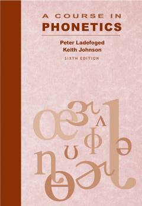

ACFonetikadan asosiy tushunchalar va nutq tovushlarini o'rganish uchun fundamental qo'llanma.
Ushbu kitob fonetika fanining asosiy tushunchalari, jumladan Xalqaro fonetik alifbo va tovushlarning hosil bo'lish mexanizmlarini chuqur o'rganishga bag'ishlangan. Asar tilshunoslik talabalari hamda tadqiqotchilar uchun mo'ljallangan klassik qo'llanma hisoblanadi.